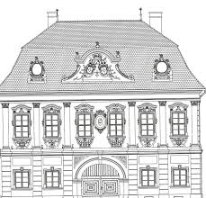
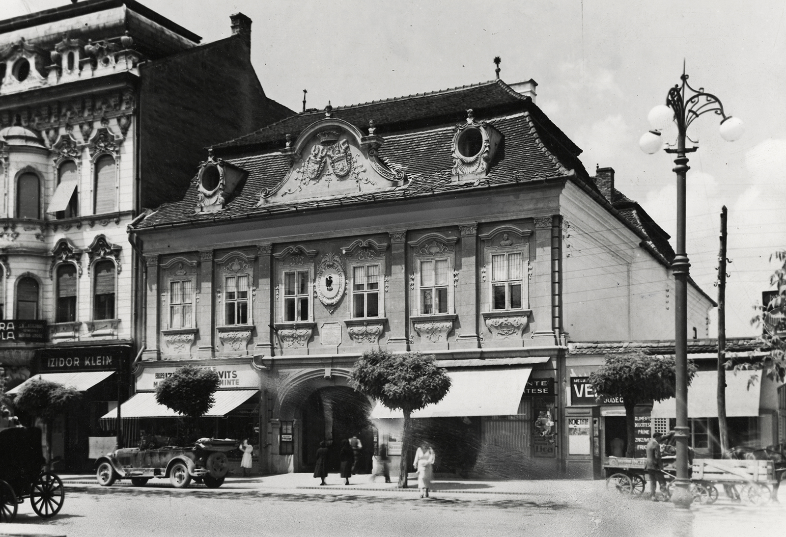

The Mureș County Ethnography Museum in Târgu Mureș finds in its collections a complete image of the ethnographic tradition of Mureș County.
The museum’s permanent exhibitions showcase a variety of aspects of traditional life, including folk costumes, agricultural tools, traditional furniture, and household artifacts.
These offer a perspective on how people from Mureș County have lived, worked, and celebrated throughout the centuries.
The museum also organizes temporary exhibitions, educational workshops, and cultural events that promote the region’s ethnographic heritage.
Visitors can explore the museum's collections to better understand the traditions, customs, and lifestyle of local communities in Mureș County.

